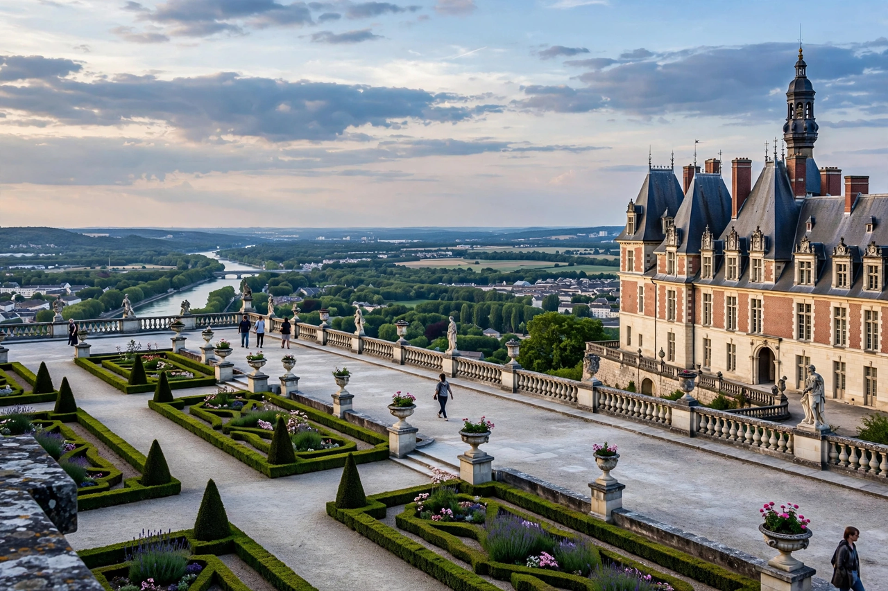

| Saint-Germain-en-Laye | |
 | |
| Country | France |
|---|---|
| Region | Île-de-France |
| Department | Yvelines (subprefecture) |
| Population | ≈ 44,000–45,000 |
| Known for | Château de Saint-Germain-en-Laye; birthplace of Louis XIV; Treaty of Saint-Germain-en-Laye (1919) |
Saint-Germain-en-Laye (French pronunciation: [sɛ̃ ʒɛʁmɛ̃ ɑ̃ lɛ]) is a commune in the Yvelines department in the Île-de-France region of north-central France, about 19 km (12 mi) west of central Paris. It is a subprefecture of the department and one of the most affluent residential suburbs of the French capital, centred on its historic royal château and a vast state forest.
The town grew around a monastery founded in the early eleventh century and dedicated to Saint Germain of Paris, and around a royal castle first built by Louis VI in the twelfth century. The Château de Saint-Germain-en-Laye became a favoured residence of the kings of France; Henry II and later monarchs expanded it, and a grand terrace overlooking the Seine was laid out under André Le Nôtre for Louis XIV. Louis XIV himself was born at the château in 1638 and made it his principal residence before the court moved to Versailles in 1682.
After the Glorious Revolution, the exiled Stuart court of James II of England resided at the château, and James is buried in the parish church. In 1919 the town gave its name to the Treaty of Saint-Germain-en-Laye, signed at the château between the Allied powers and Austria at the end of the First World War. During the Second World War the town hosted the headquarters of the German forces in the West (OB West). On 1 January 2019 the neighbouring commune of Fourqueux was merged into Saint-Germain-en-Laye.
The château now houses the Musée d'Archéologie nationale (National Museum of Archaeology), founded by Napoleon III in 1862, with collections spanning prehistory to the early Middle Ages. The 3,500-hectare Forêt de Saint-Germain, a former royal hunting forest, surrounds the town and is a popular recreation area. The town is also known internationally as the long-time home of Paris Saint-Germain football club, whose training centre, the Camp des Loges, is located there (the club moved its first-team training to a new campus in nearby Poissy in 2023, retaining ties to the town).
Saint-Germain-en-Laye is the western terminus of the RER A line to Paris, one of the oldest sections of the Paris suburban network — the Paris–Saint-Germain railway of 1837 was among France's earliest passenger lines. The town hosts the Lycée International de Saint-Germain-en-Laye, a renowned public school with international sections, and a campus of Sciences Po (Institut d'études politiques de Saint-Germain-en-Laye, founded 2013). The Allied Joint Force Command Brunssum's predecessor headquarters and SHAPE-related facilities were historically located nearby at Rocquencourt and Louveciennes.
See also: Château de Saint-Germain-en-Laye, Yvelines, Treaty of Saint-Germain-en-Laye (1919)